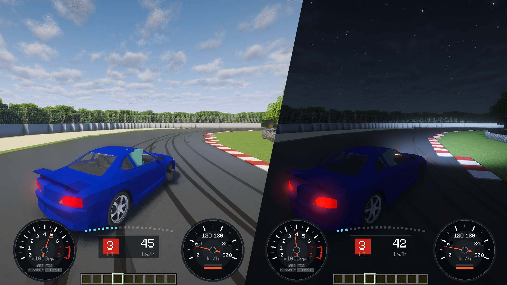
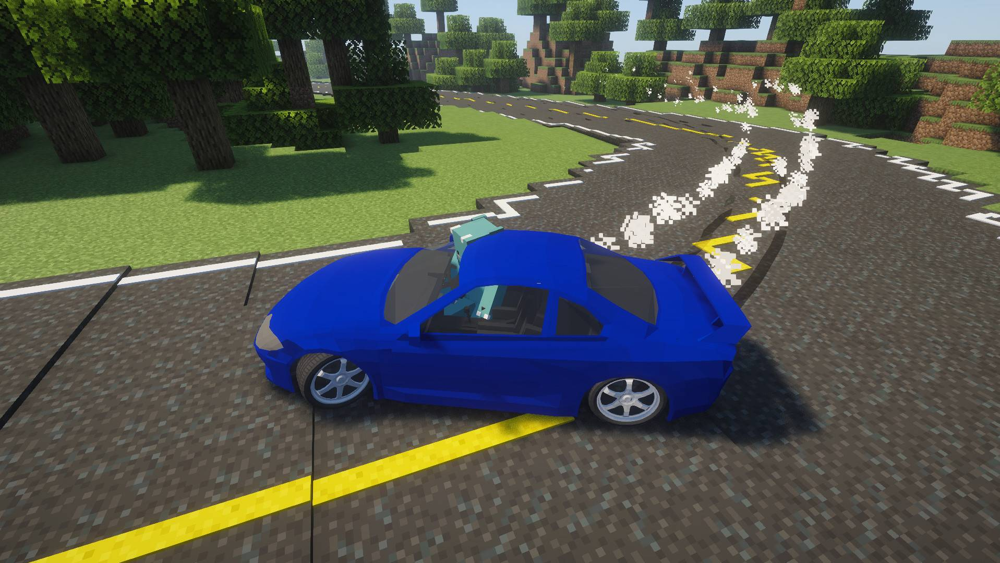
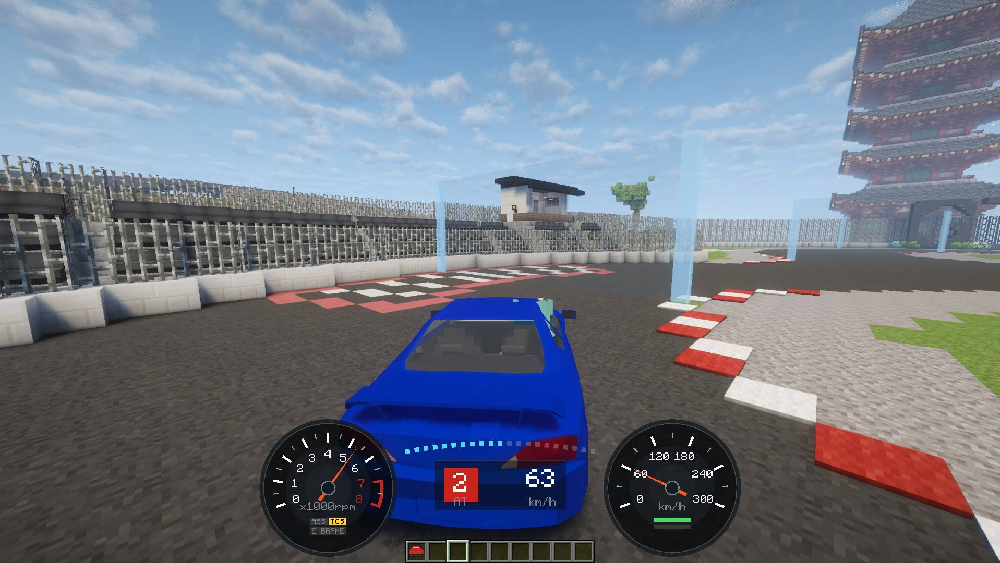
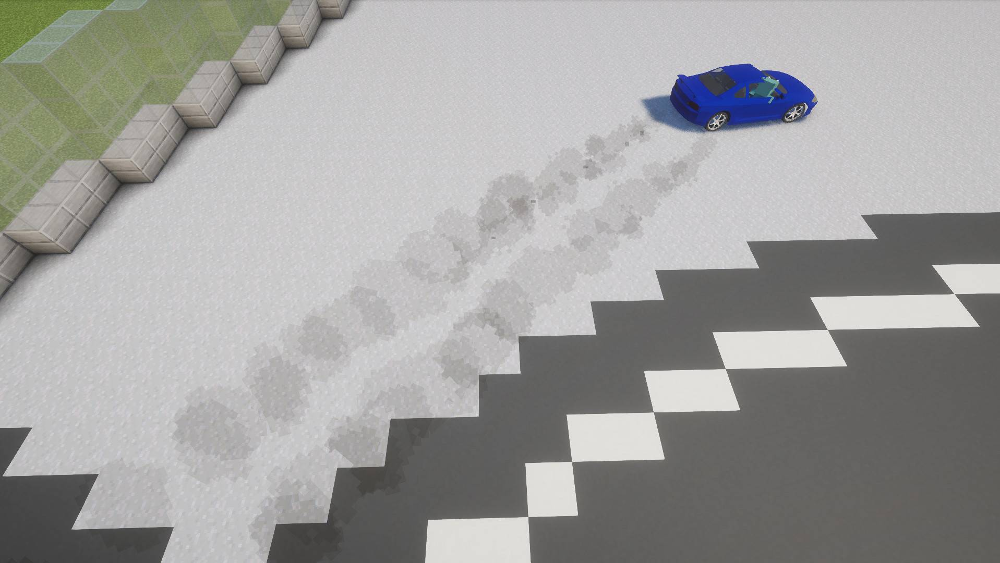
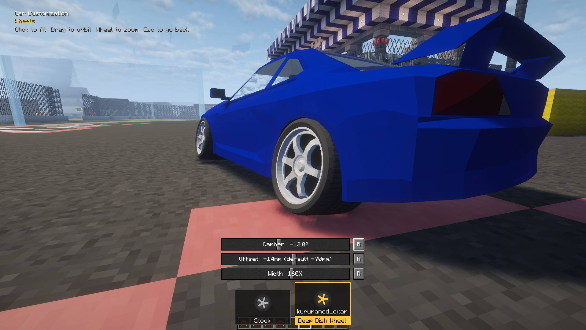

Sports coupe · AWDスポーツクーペ・4WD
Silvia S15
- Max power最高出力
- 281 PS
- 0-100 km/h
- 5.3 s
- Top speed最高速度
- 255 km/h
Included with KurumaModKurumaMod に標準搭載

Gran Turismo, in Minecraft. The front dips when you brake, the rear squats when you accelerate, and if you get greedy with the throttle it steps sideways.Minecraft で、グランツーリスモ。ブレーキでフロントが沈み、アクセルでリアが沈み、踏みすぎればタイヤを鳴らして横を向く。
All three run on the same physics. Weight, balance and drivetrain are what make them drive differently.3 台とも同じ物理で走ります。重さ、重心の位置、駆動方式の違いが、そのまま走りの違いになります。


Suspension, weight transfer, tyre grip, engine and gearbox, differential. Grip fades gradually instead of vanishing, so you feel the limit coming before you reach it. Pull the handbrake and the clutch drops for you, the rear locks, and you can hold it in a drift.サスペンション、荷重移動、タイヤのグリップ、エンジンとギア、デフ。グリップはいきなり消えずに少しずつ抜けるので、限界が近づいてくるのが分かります。サイドブレーキを引けばクラッチが自動で切れ、リアがロックして、そのままドリフトに持ち込めます。


Steering follows the slide, so there's always enough opposite lock to catch it.ハンドルは滑りに合わせて切れるので、流れた分だけカウンターを当てられます。
A proper low beam, shadows from trees and walls, beams in fog and rain. Works with shader packs.カットオフの付いたロービーム、木や壁の影、霧や雨の中の光の筋。シェーダーパックにも対応。

Tarmac, dirt, gravel, sand, snow and ice each drive differently.舗装、土、砂利、砂、雪、氷で、走りがまったく変わります。

Camber, offset and width, plus wings that make real downforce.キャンバー、オフセット、幅。ウイングは本当にダウンフォースを生みます。

Start lights, live standings and split times, in multiplayer.スタートシグナル、リアルタイムの順位、区間タイム。マルチプレイで。
Aero parts, mufflers, easier countersteer and the Porsche 911.エアロパーツ、マフラー、当てやすくなったカウンター、そしてポルシェ 911。
A car pack is a single jar. Put it in mods/ and the cars are there.カーパックは jar ひとつ。mods に入れるだけで車が増えます。
Adds the Porsche 911 and the Toyota Land Cruiser Prado.ポルシェ 911 とトヨタ ランドクルーザー プラドを追加します。
CurseForge Create作るBuild your own car in Blender. No coding, and no Blender experience needed.Blender で自分の車を作る。コードは不要、Blender 未経験でも大丈夫。
Read the guideガイドを読む Templateひな型A sample car and wheels to copy as your starting point. No credit required.土台にできるサンプルの車とホイール。クレジット表記も不要です。
CurseForgeShare setups, show off your builds, and hear about new cars first.セッティングを共有したり、作った車を見せ合ったり。新しい車の情報もいち早く。